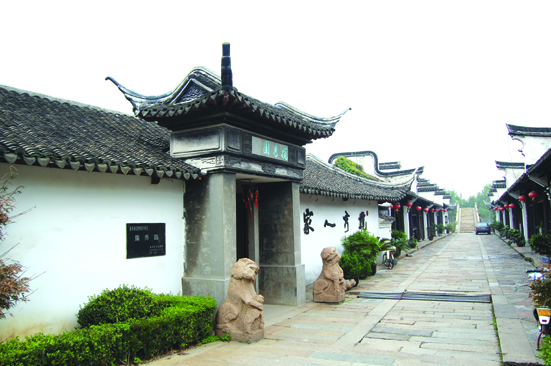

嘉兴市文物保护网 · 市级文物保护单位 · 2014-06-18 · 原文

揽秀园——嘉兴碑林位于浙江省嘉兴市南湖区南湖街道鸳湖路南湖西岸文星桥畔，系上世纪八十年代中后期修建的文物碑刻公园。揽秀园以碑廊为中心，西为古建筑，两侧长廊上嵌有“清仪阁”、“停云馆”、“小灵鹫山馆图咏”刻石。其中包括嘉兴历代碑刻84块及唐代吴道子手绘“出海观音”石刻、元代重修嘉兴路总管府学碑记等。这些碑刻有的出自历代著名的书画家如文徵明、赵之谦、何绍基、吴昌硕、任伯年之手。在五曲长廊东首八角亭中，有明代著名书画家董其昌所书“嘉兴府学重修明伦堂记”碑，碑刻于明万历三十九年（1611），碑文行笔流畅，一气呵成，风格秀逸，古朴潇洒，甚称一绝。南碑廊中保存有宋代大文豪苏东坡三过嘉兴本觉寺的三过堂碑记。揽秀园集中保护并展示嘉兴历代重要碑刻，对加强历史文化遗产保护、推动文物研究具有重大的意义。2000年公布为嘉兴市级文物保护单位。